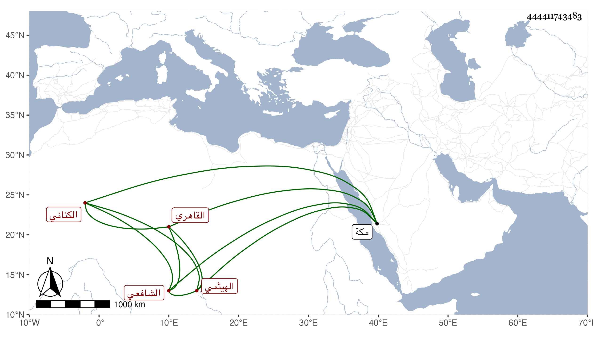

0902Sakhawi.DawLamic.ITO20230111-ara1.EIS1600.444411743483
Biography ID: 444411743483
48
محمد بن علي بن محمد بن عبد الكريم بن صالح بن شهاب بن محمد الشمس أبو عبد الكريم وعلي الكناني الهيثمي القاهري الشافعي . ولد في ذي القعدة سنة سبع وستين وسبعمائة وحفظ القرآن والمنهاج واشتغل في فنون وأخذ عن البرهان الأبناسي والكمال الدميري وحضر دروس البلقيني وسمع من بعض الشيوخ ، وتعانى النظم فقال الشعر الحسن والنثر الجيد وأنشأ الخطب الحسنة ، وتكسب بالشهادة وخطب ببعض الجوامع ، وكان لطيف المحاضرة حسن الصحبة والخط عارفا بالشروط كثير التلاوة مطرب النغمة ، قال شيخنا في معجمه : سمعت من نظمه كثيرا وطارحني بأبيات ومدحني بعدة قطع ، ثم توجه لمكة في وسط سنة اثنتين وثلاثين فجاور بها بقيتها ، وحج ورجع مع الركب فمات مبطونا بالشرفة في يوم الجمعة منتصف المحرم سنة ثلاث وثلاثين ودفن يوم السبت بسفح عقبة ايلة ، وهو في عقود المقريزي وأنه كان عارفا بالوراقة وفيه دعابة صحبته سنين عفا الله عنه .
